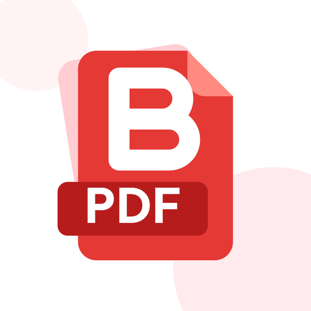

Binary PDF
by PT Biner Cipta Teknologi
A free, ad-free PDF toolkit for Android. Every tool runs on your phone, so your documents never leave it.
📷 ScanEdge detection, enhance filters, ID card mode and searchable PDFs.
📄 OrganizeMerge, split, reorder, rotate, extract and delete pages.
🔄 ConvertImages ↔ PDF, text to PDF, extract text and offline OCR.
⚡ OptimizeCompress or convert to black & white, one file or many at once.
✍️ Edit & signAnnotate, fill forms, sign, watermark and number pages.
🔒 SecurePassword-protect PDFs, remove passwords and lock the app.
Private by design. No account, no ads, no uploads. Files are processed offline on your device.